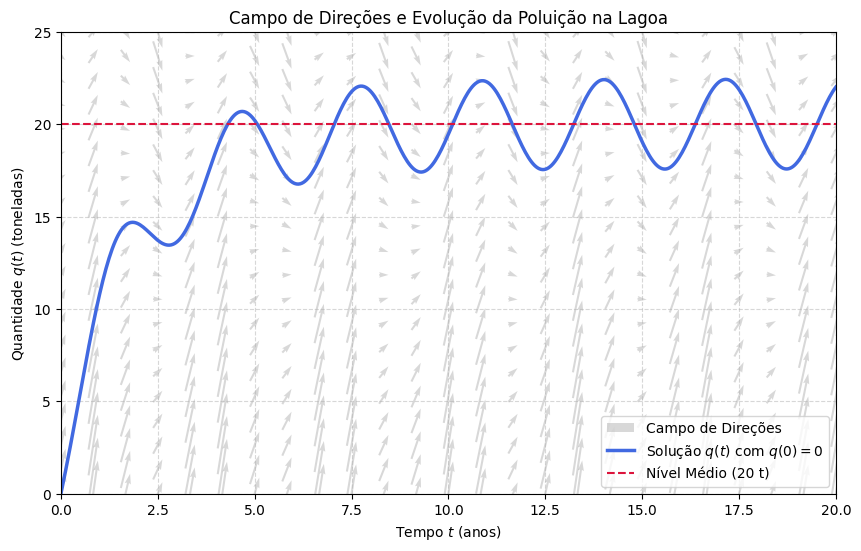

Equações Lineares e o Fator Integrante#
Na aula anterior, vimos como a equação \(y' = ay + b\) modelava uma série de fenômenos assumindo que as taxas \(a\) e \(b\) eram constantes. Mas o que acontece quando o ambiente muda ao longo do tempo?
1. Motivação: Produtos Químicos em uma Lagoa#
Considere uma lagoa que contém, inicialmente, 10 milhões de galões de água fresca. Uma indústria vizinha começa a despejar água contendo um produto químico indesejável a uma taxa de 5 milhões de galões por ano, e a mistura sai da lagoa em direção ao mar na mesma taxa (mantendo o volume da lagoa constante).
No entanto, a indústria não funciona da mesma forma o ano todo. A concentração do produto químico na água que entra varia sazonalmente (periodicamente) com o tempo \(t\) (em anos), dada pela expressão \(2 + \sin(2t)\) gramas por galão.
Se \(Q(t)\) for a quantidade (em gramas) do produto químico na lagoa, a taxa de variação é: $\(\frac{dQ}{dt} = (\text{taxa de entrada}) - (\text{taxa de saída})\)$
Taxa de entrada: \((5 \times 10^6 \text{ gal/ano}) \times (2 + \sin(2t) \text{ g/gal})\)
Taxa de saída: \((5 \times 10^6 \text{ gal/ano}) \times \left(\frac{Q(t)}{10^7} \text{ g/gal}\right) = \frac{Q(t)}{2} \text{ g/ano}\)
Para simplificar os números imensos, vamos medir a poluição em «toneladas» (megagramas), fazendo \(q(t) = Q(t)/10^6\). Se dividirmos tudo por \(10^6\), chegamos à nossa Equação Diferencial:
Tente resolver esta equação por separação de variáveis e você logo perceberá um problema: não conseguimos isolar \(q\) de um lado e \(t\) do outro. Precisamos de um novo método matemático para lidar com essa situação.
2. A Forma Geral das Equações Lineares#
O modelo da lagoa é um exemplo clássico de uma Equação Diferencial Linear de 1ª Ordem Não Autônoma. A forma-padrão geral de escrever qualquer equação dessa família é:
Onde:
\(p(t)\) é uma função que multiplica a variável dependente \(y\).
\(g(t)\) é o termo forçante (ou fonte) do lado direito.
Se \(g(t)\) fosse zero, a equação seria «homogênea» e facilmente separável. O desafio aqui é lidar com o termo \(g(t)\) sem destruir a relação da derivada.
Antes de resolvermos a lagoa, vamos ver como um «truque» matemático resolve equações muito parecidas com ela.
3. Resolvendo Casos Simples: Um Truque Elegante#
A ideia principal para resolver essas equações vem do Cálculo 1: a Regra do Produto. Lembre-se que
O truque consiste em multiplicar a equação inteira por uma função «mágica» que transforma o lado esquerdo em uma derivada de produto exata.
Veja dois exemplos.
Exemplo Simples 1#
Considere a equação: $\(\frac{dy}{dt} + \frac{1}{2}y = \frac{1}{2}e^{t/3}\)$
Se, «do nada», decidirmos multiplicar todos os termos por \(e^{t/2}\), veja o que acontece: $\(e^{t/2}\frac{dy}{dt} + \frac{1}{2}e^{t/2}y = \frac{1}{2}e^{5t/6}\)$
Perceba que o lado esquerdo é exatamente o resultado de derivar o produto \((e^{t/2}y)\). Podemos reescrever a equação como: $\(\frac{d}{dt} \left( e^{t/2}y \right) = \frac{1}{2}e^{5t/6}\)$
Agora ficou fácil! Basta integrar os dois lados em relação a \(t\): $\(e^{t/2}y = \int \frac{1}{2}e^{5t/6} \, dt\)\( \)\(e^{t/2}y = \frac{3}{5}e^{5t/6} + C\)$
Para isolar \(y\), dividimos tudo por \(e^{t/2}\): $\(y(t) = \frac{3}{5}e^{t/3} + Ce^{-t/2}\)$ Pronto, resolvemos a EDO!
Exemplo Simples 2#
Considere o problema com \(t > 0\): $\(t y' + 2y = 4t^2 \implies y' + \frac{2}{t}y = 4t\)$
Desta vez, a função mágica será \(t^2\). Multiplicando toda a equação reescrita por \(t^2\): $\(t^2 y' + 2t y = 4t^3\)$
O lado esquerdo é exatamente a derivada do produto \((t^2 y)\). $\(\frac{d}{dt} \left( t^2 y \right) = 4t^3\)$
Integrando os dois lados: $\(t^2 y = t^4 + C\)\( \)\(y(t) = t^2 + \frac{C}{t^2}\)$
4. O Método do Fator Integrante (A Regra Geral)#
Nos exemplos acima, as funções mágicas \(e^{t/2}\) e \(t^2\) não caíram do céu. Existe uma forma dedutiva de encontrá-las para qualquer EDO linear de primeira ordem.
Vamos chamar essa função mágica de Fator Integrante, denotado por \(\mu(t)\).
Se tomarmos a equação na forma padrão \(\frac{dy}{dt} + p(t)y = g(t)\) e a multiplicarmos por \(\mu(t)\), temos:
Queremos que o lado esquerdo seja exatamente a derivada do produto \(\frac{d}{dt}[\mu(t)y]\).
Expandindo isso pela regra do produto, teríamos
Para que isso seja verdade, o termo que acompanha o \(y\) precisa bater: $\(\frac{d\mu}{dt} = \mu(t) p(t)\)$
Essa é uma equação separável para \(\mu(t)\): $\(\frac{1}{\mu} d\mu = p(t) dt\)\( \)\(\ln|\mu| = \int p(t) dt\)$
Elevando na exponencial e ignorando a constante (pois só precisamos de um fator integrante que funcione), chegamos à fórmula definitiva:
Resumo do Método:#
Coloque a EDO na forma padrão: \(y' + p(t)y = g(t)\)
Calcule o fator integrante: \(\mu(t) = e^{\int p(t) dt}\)
Multiplique a equação toda por \(\mu(t)\).
O lado esquerdo virará \(\frac{d}{dt}[\mu(t)y]\).
Integre ambos os lados e isole \(y(t)\).
5. Retornando ao Problema da Lagoa#
Agora temos as ferramentas para limpar a nossa lagoa. A equação era: $\(\frac{dq}{dt} + \frac{1}{2}q = 10 + 5\sin(2t)\)$
Aqui, \(p(t) = 1/2\). Portanto, o nosso fator integrante será: $\(\mu(t) = e^{\int \frac{1}{2} dt} = e^{t/2}\)$
Multiplicando a EDO por \(e^{t/2}\): $\(e^{t/2}q' + \frac{1}{2}e^{t/2}q = e^{t/2}(10 + 5\sin(2t))\)\( \)\(\frac{d}{dt}\left( e^{t/2} q \right) = 10e^{t/2} + 5e^{t/2}\sin(2t)\)$
Integrando ambos os lados (o segundo termo do lado direito requer integração por partes duas vezes, omitiremos a álgebra chata aqui para focar na engenharia): $\(e^{t/2} q(t) = 20e^{t/2} + e^{t/2} \left[ \frac{10}{17}\sin(2t) - \frac{40}{17}\cos(2t) \right] + C\)$
Dividindo tudo por \(e^{t/2}\), obtemos a Solução Geral: $\(q(t) = 20 + \frac{10}{17}\sin(2t) - \frac{40}{17}\cos(2t) + C e^{-t/2}\)$
Como a lagoa estava inicialmente com água limpa (fresca), sabemos que a condição inicial é \(q(0) = 0\). Substituindo: $\(0 = 20 + 0 - \frac{40}{17} + C \implies C = \frac{40}{17} - 20 = -\frac{300}{17}\)$
A nossa solução exata para a quantidade de produto químico ao longo dos anos é: $\(q(t) = 20 - \frac{40}{17}\cos(2t) + \frac{10}{17}\sin(2t) - \frac{300}{17}e^{-t/2}\)$
Vamos analisar isso visualmente.
import numpy as np
import matplotlib.pyplot as plt
# 1. Definindo a EDO: q' = f(t, q)
def f_lagoa(t, q):
return 10 + 5 * np.sin(2 * t) - 0.5 * q
# 2. Criando a grade de pontos para o Campo de Direções
t_grid = np.linspace(0, 20, 25)
q_grid = np.linspace(0, 25, 20)
T, Q_mesh = np.meshgrid(t_grid, q_grid)
# Ajuste proporcional de tamanho das setas
dt_step = (20 - 0) / 25 * 0.6
dT = np.ones(T.shape) * dt_step
dQ = f_lagoa(T, Q_mesh) * dt_step
# 3. Solução Exata para q(0) = 0
t_smooth = np.linspace(0, 20, 500)
q_sol = 20 - (40/17)*np.cos(2*t_smooth) + (10/17)*np.sin(2*t_smooth) - (300/17)*np.exp(-t_smooth/2)
# 4. Plotagem
plt.figure(figsize=(10, 6))
# Plot do Campo de Direções
plt.quiver(T, Q_mesh, dT, dQ, color='gray', alpha=0.3, pivot='mid',
angles='xy', scale_units='xy', scale=2, label='Campo de Direções')
# Plot da Solução Exata
plt.plot(t_smooth, q_sol, color='royalblue', linewidth=2.5, label=r'Solução $q(t)$ com $q(0)=0$')
# Linha do Nível Médio de Equilíbrio
plt.axhline(20, color='crimson', linestyle='--', linewidth=1.5, label='Nível Médio (20 t)')
plt.title("Campo de Direções e Evolução da Poluição na Lagoa")
plt.xlabel("Tempo $t$ (anos)")
plt.ylabel("Quantidade $q(t)$ (toneladas)")
plt.xlim(0, 20)
plt.ylim(0, 25)
plt.legend(loc='lower right')
plt.grid(True, linestyle='--', alpha=0.5)
plt.show()

O que a Matemática está nos dizendo?#
Observe o gráfico acima e veja o poder de desmembrar a equação nos seus componentes:
O Regime Transitório: O termo \(- \frac{300}{17}e^{-t/2}\) puxa a quantidade inicial para zero (água fresca). Mas como o expoente é negativo, esse termo «morre» (vai para zero) à medida que o tempo avança. Após alguns anos (em torno de \(t=10\)), a memória do estado inicial limpo da lagoa é completamente apagada.
O Regime Permanente: O restante da equação \(20 - \frac{40}{17}\cos(2t) + \frac{10}{17}\sin(2t)\) independe de onde o sistema começou. Ele mostra que a lagoa oscila em torno de um nível médio constante de 20 toneladas. As ondas são o reflexo direto da variação sazonal do despejo da fábrica (representado pelas funções seno e cosseno).
Para sistemas lineares de engenharia (sejam circuitos elétricos AC, sejam sistemas mecânicos vibratórios), essa decomposição entre a resposta transitória (que zera) e a resposta forçada ou permanente (que dita o ritmo futuro) é um dos conceitos analíticos mais importantes que você levará deste curso.
6. Exemplos de Fixação#
Exemplo 3#
Encontre a solução geral da equação diferencial:
Analise o comportamento da solução quando \(t \to \infty\) em função da constante \(C\). Existe algum valor inicial \(y(0)\) para o qual a solução não cresce exponencialmente?
Exemplo 4#
Considere o Problema de Valor Inicial (PVI):
a) Mostre que o fator integrante é \(\mu(t) = e^{t^2/4}\).
b) Escreva a solução \(y(t)\) utilizando uma integral definida com limite inferior em \(t_0 = 0\). (Nota: essa integral não possui primitiva em termos de funções elementares, devendo ser mantida na forma integral).